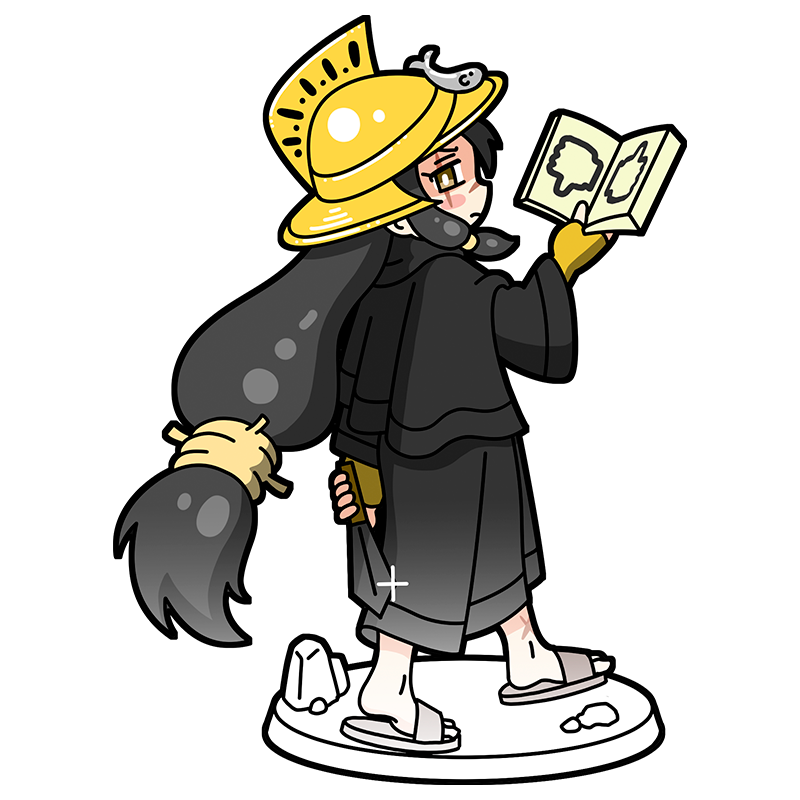

Come at me…
From the front or from behind,
I’ll crush you all the same…
Gerome
The most fearsome weapon
is tyranny guided by cunning.
A muse representing 19th-century French Academic art. Skilled at reading people, she manipulates those around her from behind the scenes. With many enemies and constant threats of attack, she always wears a huge golden helmet to protect herself.
Style
Hometown
Kingdom of France
Classics
- "Pollice Verso"
- "Éminence Grise"
- "Pygmalion and Galatea" etc.
This is the Gerome piece!
Pollice Verso
This painting depicts gladiators fighting as public entertainment in ancient Rome. A powerful warrior in a golden helmet stands over a defeated fighter, asking the crowd whether he should live or die. It famously influenced Ridley Scott when he made Gladiator. In fact, it is unclear whether a thumbs-down meant life or death, but this painting helped establish the gesture as a symbol of delivering the final blow.
Year
1872
Medium
Oil on canvas
Dimension
96.5 cm x 149.2 cm
Collection
"Phoenix Art Museum
（USA)
"
Who is Gerome?
Jean-Léon Gérôme
A leading painter of French Academic art. Even as Impressionism rose, he continued to pursue meticulous detail and realistic beauty. He was known for history paintings set in ancient Rome and the Middle East, as well as works depicting Eastern landscapes and enslaved people, which reveal contemporary French attitudes toward other cultures. Often portrayed as an opponent of Impressionism, he built a distinguished career through his technical skill and left his mark on art history.
Full Name
Jean-Léon Gérôme
Born
May 11, 1824
Died
January 10, 1904(aged 79)